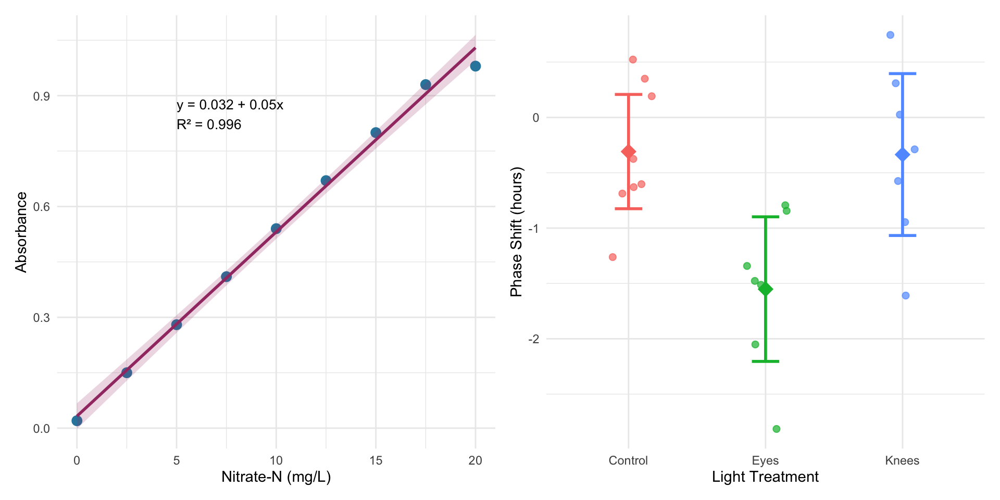
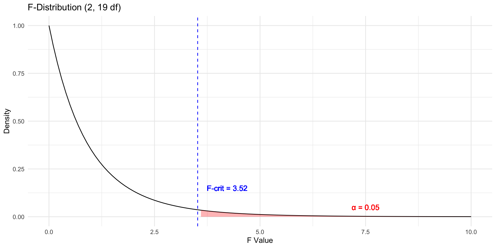
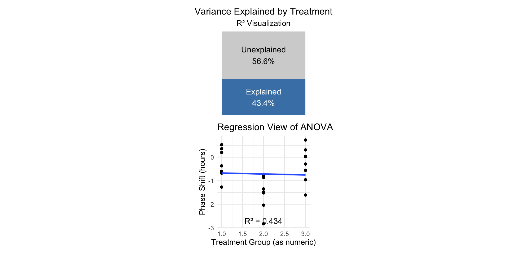
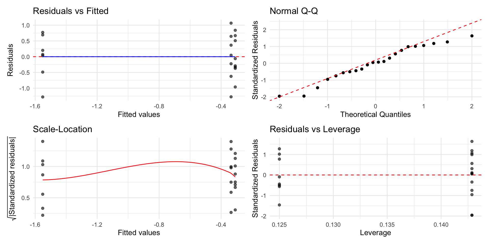
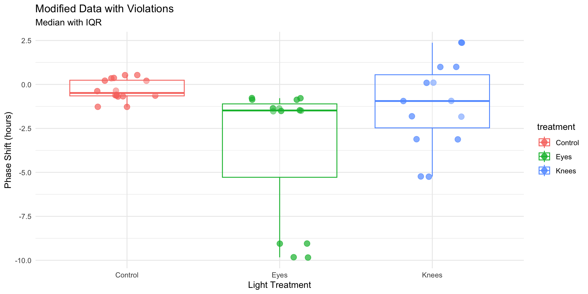
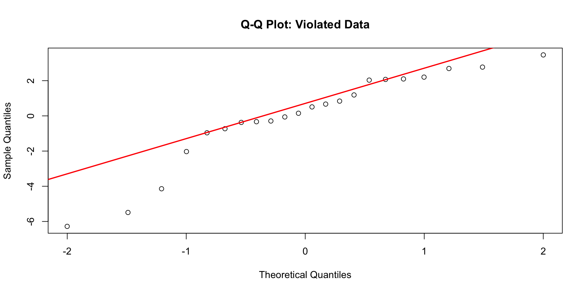
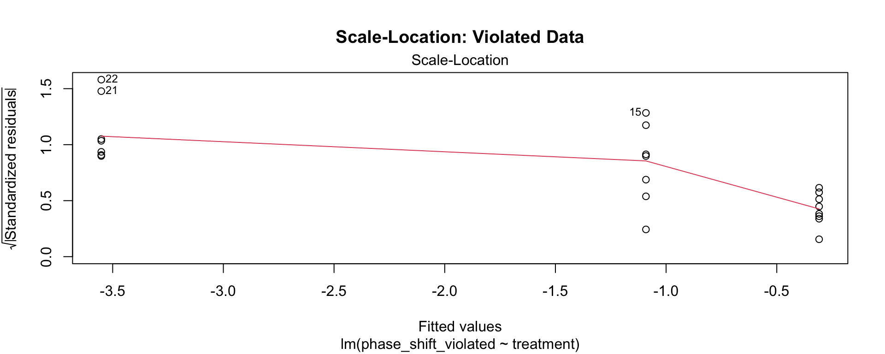
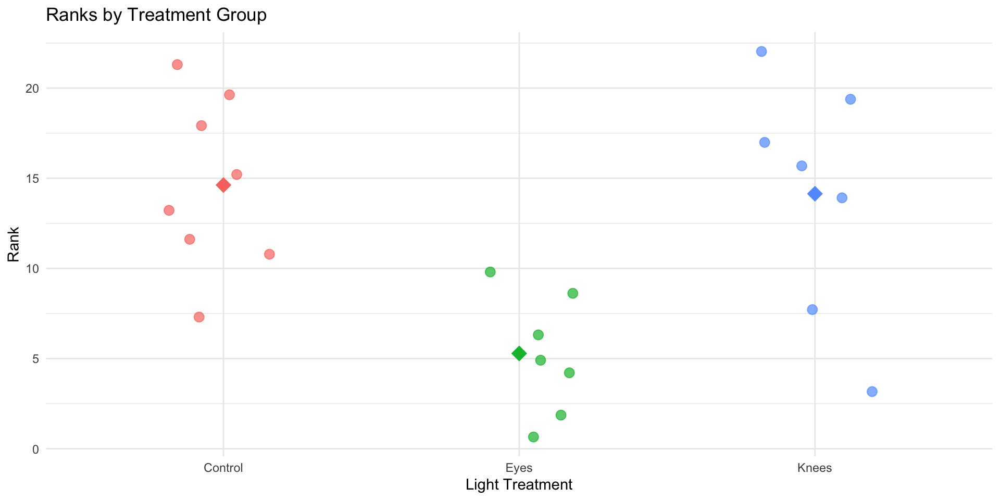
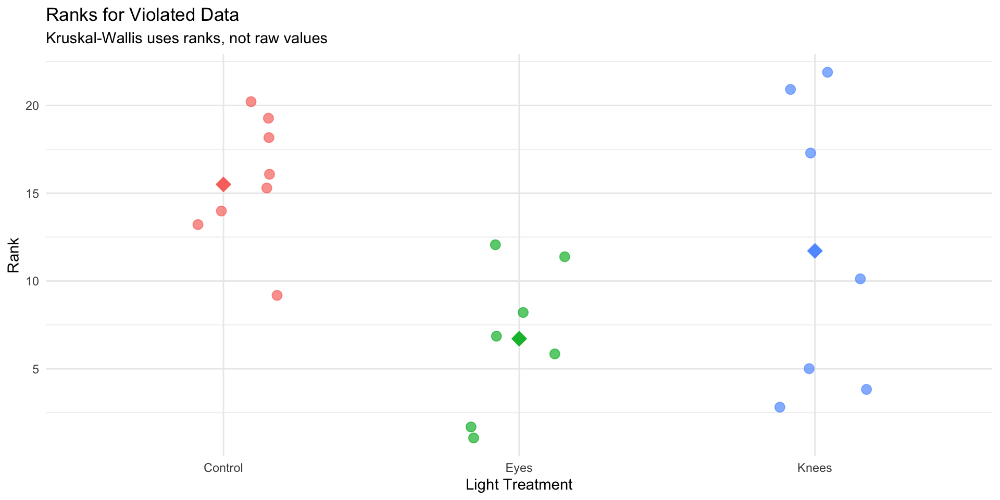

Lecture 11 - Single factor analysis of variance - ANOVA
Multiple Regression
- MLR model
- Regression parameters
- Analysis of variance
- Null hypotheses
- Explained variance
- Assumptions and diagnostics
- Collinearity
- Interactions
- Dummy variables
- Model selection
- Importance of predictors

ANOVA
Analysis of variance: single and to come multi-factor designs
- Predictor variables: fixed
- ANOVA model
- Analysis and partitioning of variance
- Null hypothesis
- Assumptions and diagnostics
- Post F Tests - Tukey and others
- Reporting the results
- Mixed Model Anova - random effects
What if response continuous and predictor(s) categorical?
| Independent variable | ||
|---|---|---|
| Dependent variable | Continuous | Categorical |
| Continuous | Regression | ANOVA |
| Categorical | Logistic regression |
Both regression and ANOVA:
- Partition the total variation in Y
- Use F-tests for significance where one MS is divided by another
Regression
- Form: \(Y = \beta_0 + \beta_1X + \varepsilon\)
- \(Y\) = outcome/response variable
- \(\beta_0\) = intercept (value of Y when X = 0)
- \(\beta_1\) = slope (change in Y per unit increase in X)
- \(X\) = predictor/independent variable
- \(\varepsilon\) = error term
- Test: \(H_0: \beta_1 = 0\)
- Tests whether slope equals zero
- Rejecting means X significantly predicts Y
ANOVA
- Form: \(Y_{ij} = \mu + A_i + \varepsilon_{ij}\)
- \(Y_{ij}\) = observation for person j in group i
- \(\mu\) = grand mean across all groups
- \(A_i\) = effect of group i
- \(\varepsilon_{ij}\) = error term
- Test: \(H_0: \mu_1 = \mu_2 = ... = \mu_k\)
- Tests whether all group means are equal
- Rejecting means at least one group differs
General method for partitioning variation in continuous dependent variable
- One or more continuous (and categorical) predictors:
- regression
- One or more categorical predictors:
- ANOVA
- Categorical predictor variables:
- groups or experimental treatments
Lecture 12: ANOVA as Regression
ANOVA as Regression
With one categorical variable, ANOVA is equivalent to regression with dummy variables.
In fact when we will run ANOVAs we will use he same code as for regression!
regression: model <- lm(response ~ predictor, data = df)
anova: model <- lm(response ~ factor, data = df)

ANOVA aims to compare means of groups:
- Contribution of predictors + “error” to variability
- Test H₀ that population (random effects) or group (fixed effects) means are equal
- Single factor (1-way) and multifactor (2-, 3-way designs)
- Single factor: one factor with more than two levels
- Multifactor:
- two or three factors with two or more levels each
- Examines variation due to factors AND their interaction
Lecture 12: Partitioning the Sum of Squares
The total variation in Y can be expressed as a sum of squares:
\(SS_{total} = \sum_{i=1}^{a}\sum_{j=1}^{n}(Y_{ij} - \bar{Y})^2\)
This can be partitioned into two components:
Among Groups (Treatment): \(SS_{among} = \sum_{i=1}^{a}\sum_{j=1}^{n}(\bar{Y}_i - \bar{Y})^2 = n\sum_{i=1}^{a}(\bar{Y}_i - \bar{Y})^2\)
Within Groups (Error): \(SS_{within} = \sum_{i=1}^{a}\sum_{j=1}^{n}(Y_{ij} - \bar{Y}_i)^2\)
These components are additive: \(SS_{total} = SS_{among} + SS_{within}\)

The F-ratio is calculated as: \(F = \frac{MS_{among}}{MS_{error}}\)
- Under the null hypothesis (all means equal):
- The F-ratio should be approximately 1
- Larger F-ratios suggest among-group variance exceeds that expected by chance
- The F-ratio should be approximately 1
- With the circadian rhythm data:
- F = 7.29 - p = 0.004
- We reject the null hypothesis
- F-ratio follows F-distribution with (a - 1) and (a(n - 1)) df
- F = 7.29 - p = 0.004
# A tibble: 2 × 2
Metric Value
<chr> <dbl>
1 F-observed 7.29
2 F-critical (α = 0.05) 3.52
An ANOVA with two groups (a = 2) is equivalent to a t-test:
- Why \(F=t^2\)
- testing the same hypothesis: are means of two groups different?
- Understanding the t-statistic
The t-statistic for comparing two independent groups is: \(t = \frac{\bar{X}_1 - \bar{X}_2}{SE_{\text{difference}}}\)
Measuring # standard errors apart the two means are and can be + / -
- Understanding the F-statistic
F-statistic in ANOVA is: \(F = \frac{\text{Mean Square Between Groups}}{\text{Mean Square Within Groups}} = \frac{MS_B}{MS_W}\)
ratio of variance between groups to variance within groups
Unlike \(t\), \(F\) is always non-negative (it’s a ratio of squared quantities).
- The Mathematical Connection (squaring remove sign) of t2
- Both measure same signal-to-noise ratio:
numerators capture difference between groups (signal)
denominator captures variability within groups (noise)
- Both measure same signal-to-noise ratio:
- When you have two groups:
\(MS_B\) is directly related to \((\bar{X}_1 - \bar{X}_2)^2\)
\(MS_W\) is related to the pooled variance
- Degrees of Freedom also match up:
t-test: \(df = n_1 + n_2 - 2\)
F-test (two groups): \(df_1 = 1\) (numerator), \(df_2 = n_1 + n_2 - 2\) (denominator)
F-distribution with \(df_1 = 1\) is the square of a t-distribution with \(df_2\)
Why This Matters
Shows ANOVA is actually a generalization of the t-test
When \(a = 2\), you get the same result either way
but ANOVA extends naturally to comparing three or more groups,
can’t do that directly with a t-test (without running into multiple comparison problems).
Numerical Example
Let’s verify this relationship with a simple example in R:
Using circ_data (Control vs Knees groups):
t-statistic: 0.0741
t^2: 0.0055
F-statistic: 0.0055
Difference (should be ~0): 0 R² summarizes the contribution of group differences to total variation:
\[R^2 = \frac{SS_{among}}{SS_{total}}\]
This is interpreted as the “fraction of the variation in Y that is explained by groups.”
For the circadian rhythm data: \[R^2 = \frac{7.224}{16.639} = 0.43\]
43% of the total variation in phase shift is explained by differences in light treatment, with the remaining 57% being unexplained variation.

Lecture 12: ANOVA diagnostics


A newer way to check with the performance library


Key ANOVA Principles
- Purpose: ANOVA (Analysis of Variance) compares means across multiple groups simultaneously
- Connection to Regression:
- Both are special cases of the General Linear Model
- ANOVA with categorical predictors = Regression with dummy variables
- Both partition variance into explained and unexplained components
- The Analysis of Variance:
- Partitions total variation into components
- Tests whether differences among groups exceed what would be expected by chance
- Uses F-tests to compare variance between groups to variance within groups
- Sum of Squares Partitioning:
- SS(Total) = SS(Between Groups) + SS(Within Groups)
- Same as SS(Total) = SS(Regression) + SS(Error) in regression
- Fixed vs. Random Effects:
- Fixed effects: specific groups of interest (most common)
- Random effects: sampling from a larger population
Common Non-Parametric Alternatives to ANOVA
Non-parametric tests make fewer assumptions about the data distribution
- Kruskal-Wallis Test
- Non-parametric alternative to one-way ANOVA
- Tests for differences in median ranks
- Works with ordinal or continuous data
- Assumptions: Independent observations, similar distribution shapes
- Mood’s Median Test not covered here
- Tests whether medians differ across groups
- More robust but less powerful than Kruskal-Wallis
- Good for highly skewed data
When to Use Non-Parametric Tests
Consider non-parametric tests when:
- Sample sizes are small
- Data are heavily skewed
- Outliers are present and legitimate
- Variances are very unequal
- Data are ordinal (ranked)
- Assumptions checks clearly fail
Trade-offs:
- ✗ Less statistical power
- ✗ Test medians/ranks, not means
The Kruskal-Wallis H Test
- Most common non-parametric alternative to one-way ANOVA
- What it does:
- Ranks all observations from smallest to largest
- Compares the sum of ranks between groups
- Tests if groups come from the same distribution
- Hypotheses:
- H₀: All groups have the same distribution (same median)
- H₁: At least one group has a different distribution
- Test statistic (H): \(H = \frac{12}{N(N+1)} \sum_{i=1}^{k} n_i (\bar{R}_i - \bar{R})^2 - 3(N+1)\)
- Where:
- N = total sample size
- k = number of groups
- \(\bar{R}_i\) = mean rank for group i
- \(\bar{R}\)= overall mean rank = (N+1)/2
- nᵢ = sample size for group i
- constant 12 comes from the variance of ranks in a uniform distribution
- Distribution: Approximated by χ² with (k-1) degrees of freedom
- What it does:
Assumptions of Kruskal-Wallis
Much more relaxed than parametric ANOVA:
- Independence: Observations must be independent
- Same as parametric ANOVA
- Still critical!
- Similar distribution shapes: Groups should have similar distribution shapes (same spread/variance)
- If violated, interprets as differences in distributions generally
- Not just medians
- Ordinal or continuous data: Response variable should be at least ordinal
- What’s NOT assumed:
- ✗ Normal distribution
- ✗ Equal variances (though helps interpretation)
- ✗ Specific distribution shape
Creating Data That Violates Assumptions
Let’s create a modified dataset with clear violations:
# Create data with outliers and skewness
set.seed(42)
violated_circ_df <- circ_data %>%
mutate(
phase_shift_violated = case_when(
treatment == "Control" ~ phase_shift,
treatment == "Knees" ~ phase_shift * 3.25,
treatment == "Eyes" ~ {
n <- length(phase_shift)
c(phase_shift[1:(n-2)], phase_shift[(n-1):n] - 7)
}
)
)
# Fit model with violated assumptions
violated_model <- lm(phase_shift_violated ~ treatment,
data = violated_circ_df)What we changed:
- - Increased variance in Knees group
- - Added extreme outliers to Eyes group
- - Created unequal variances and non-normality

Normality Test on Violated Data
Clear violation: p < 0.05, points deviate from line
Shapiro-Wilk normality test
data: resid(violated_model)
W = 0.89473, p-value = 0.02335
Variance Test on Violated Data
- ok having issues making it not homogeoeous
- Clear violation: p < 0.05, unequal variances evident
Levene's Test for Homogeneity of Variance (center = median)
Df F value Pr(>F)
group 2 1.5618 0.2355
19 
Running Kruskal-Wallis on Original Data
Even though assumptions are met, let’s compare results:
Kruskal-Wallis rank sum test
data: phase_shift by treatment
Kruskal-Wallis chi-squared = 9.4231, df = 2, p-value = 0.008991Interpretation: - H = test statistic (chi-squared approximation) - df = degrees of freedom (k - 1 = 3 - 1 = 2) - p-value = 0.0135 (significant at α = 0.05) - Conclusion: At least one group differs from others
Compare to parametric ANOVA:
Analysis of Variance Table
Response: phase_shift
Df Sum Sq Mean Sq F value Pr(>F)
treatment 2 7.2245 3.6122 7.2894 0.004472 **
Residuals 19 9.4153 0.4955
---
Signif. codes: 0 '***' 0.001 '**' 0.01 '*' 0.05 '.' 0.1 ' ' 1Rank Visualization
How Kruskal-Wallis works:

Rank Sums:
# A tibble: 3 × 4
treatment mean_rank sum_rank n
<fct> <dbl> <dbl> <int>
1 Control 14.6 117 8
2 Eyes 5.29 37 7
3 Knees 14.1 99 7Non-Parametric Test Handles Violations
Running Kruskal-Wallis on data with assumption violations:
Kruskal-Wallis rank sum test
data: phase_shift_violated by treatment
Kruskal-Wallis chi-squared = 6.8453, df = 2, p-value = 0.03263Analysis of Variance Table
Response: phase_shift_violated
Df Sum Sq Mean Sq F value Pr(>F)
treatment 2 41.806 20.9029 2.8361 0.0836 .
Residuals 19 140.037 7.3704
---
Signif. codes: 0 '***' 0.001 '**' 0.01 '*' 0.05 '.' 0.1 ' ' 1- Key observations:
- Both tests still detect differences
- Kruskal-Wallis more robust to violations
- Parametric test may give misleading results when assumptions violated
- Non-parametric test maintains validity

- Why Kruskal-Wallis is robust:
- - Uses ranks instead of raw values
- - Outliers affect ranks minimally
- - Unequal variances less problematic
- - No distribution assumptions needed
Pairwise Comparisons After Significant Kruskal-Wallis
Just like ANOVA, we need post-hoc tests to identify which groups differ:
Pairwise comparisons using Wilcoxon rank sum exact test
data: nonparam_circ_df$phase_shift and nonparam_circ_df$treatment
Control Eyes
Eyes 0.0037 -
Knees 1.0000 0.0787
P value adjustment method: bonferroni - Interpretation of p-values:
- - Control vs Eyes: p = 0.024 (significant)
- - Control vs Knees: p = 1.000 (not significant)
- - Eyes vs Knees: p = 0.078 (not significant)
- Common adjustment methods:
- -
"bonferroni": Most conservative - -
"holm": Less conservative than Bonferroni - -
"BH": Benjamini-Hochberg (controls false discovery rate) - -
"none": No adjustment (not recommended)
- -
Post-Hoc for Violated Data
Pairwise comparisons using Wilcoxon rank sum exact test
data: violated_circ_df$phase_shift_violated and violated_circ_df$treatment
Control Eyes
Eyes 0.0037 -
Knees 1.0000 1.0000
P value adjustment method: bonferroni Comparison table:
Original Data Pairwise p-values:
Control vs Eyes: 0.024 *
Control vs Knees: 1.000
Eyes vs Knees: 0.078Violated Data Pairwise p-values:
Control vs Eyes: 0.015 *
Control vs Knees: 1.000
Eyes vs Knees: 0.015 *Dunn’s Test for Multiple Comparisons
Dunn’s test is specifically designed for Kruskal-Wallis post-hoc comparisons:
Comparison Z P.unadj P.adj
1 Control - Eyes 2.7789287 0.005453849 0.01636155
2 Control - Knees 0.1434629 0.885924641 1.00000000
3 Eyes - Knees -2.5517789 0.010717452 0.03215236- Advantages of Dunn’s test:
- Designed specifically for Kruskal-Wallis
- Provides Z-statistics in addition to p-values
- Multiple adjustment methods available
- More appropriate than multiple Wilcoxon tests
- Z-statistic is a standardized test statistic that tells you how many standard deviations an observation or difference is from the expected value (usually zero, meaning “no difference”).
Dunn’s Test on Violated Data
Comparison Z P.unadj P.adj
1 Control - Eyes 2.614212 0.008943349 0.02683005
2 Control - Knees 1.126449 0.259975463 0.77992639
3 Eyes - Knees -1.440520 0.149720243 0.44916073- Interpreting Z-statistics:
- Large |Z| values indicate bigger differences
- Z > 1.96 approximately equivalent to p < 0.05
- Sign indicates direction of difference
How to Report Kruskal-Wallis Results
Essential elements to include:
- Test name and purpose
- Sample sizes per group
- Medians and IQRs (not means and SDs!)
- Test statistic (H) and degrees of freedom, P-value, Effect size
- Post-hoc test results
- Conclusion
Example write-up: “A Kruskal-Wallis test was conducted to compare the effect of light treatment on circadian rhythm phase shift across three groups: Control (n = 8), Knees (n = 7), and Eyes (n = 7). Median phase shifts were -0.48 hours (IQR = 0.84) for Control, -0.29 hours (IQR = 1.04) for Knees, and -1.48 hours (IQR = 0.66) for Eyes. The test revealed a statistically significant difference in phase shift between the groups, H(2) = 8.66, p = 0.013, ε² = 0.37. Post-hoc pairwise comparisons using Dunn’s test with Bonferroni correction indicated that the Eyes treatment differed significantly from Control (p = 0.024), but no other pairwise differences were significant. These results suggest that light exposure to the eyes has a different effect on circadian rhythm than light to other body parts.”